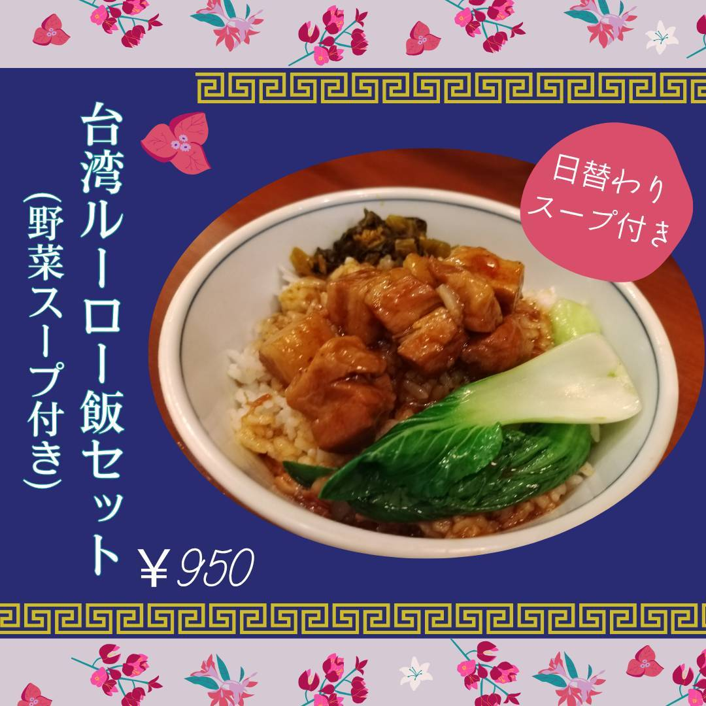

台湾グルメ 佳集
台湾の家庭の味をそのまま日本で。
佳集の名物
台湾ルーローハン セット（スープ、漬物付き）

看板メニュー
台湾ルーローハン セット
角切り豚肉を八角と醤油でじっくり煮込み、香り高いごはんにたっぷりとかけた一品。台湾の家庭で親しまれている味を、そのままお届けします。
コクのある旨味と、八角の香りが食欲をそそります。佳集の看板メニューを、ぜひ一度お試しください。
メニューを見る料理ギャラリー
看板メニューと定番の人気料理
佳集の3つの特徴
毎日通いたくなる、私たちのこだわり
本場の味付け
八角、五香粉など本場のスパイスを使い、台湾の家庭で親しまれている味を忠実に再現しています。懐かしさと新しさが同居する、唯一無二の味わいです。
手作り小皿と日替わりスープ
メインに添える小皿料理は、すべて手作り。日替わりのスープも毎朝丁寧に仕込んでいます。一つひとつに、店長の想いが詰まっています。
お一人様でも入りやすい
カウンター席をご用意していますので、お一人様でも気軽にお立ち寄りいただけます。仕事帰りや、ふらっと立ち寄りたいときに、ぜひどうぞ。
アクセス
お気軽にお立ち寄りください